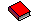

ME

about me
introduction
I'm Alex, a graphic and fashion designer studying Global Business and Digital arts at the University of Waterloo. I design fascinating and fun creations for those with creative hearts and mind. With a deep understanding on a plethora of topics beyond the surface level, I draw on a deep automative style to create my finished projects. As I’m driven by a perpetual curiosity to adapt and learn more, I’ve continued to develop all sorts of skills; UX design, coding, illustration, graphic and fashion design, and above all, adaptability!
inspirations
Sharks are my favourite animal ever, which is
why my artist name is "shark" in Mandarin!
Aside from sharks, my current inspiration is
MelonLand! The artist behind it,
Daniel Murray,
holds such an interesting art form.
Music I like


Workflow
The beginning
Every result started with an idea. A question, a possibility of "Could I do this?". This is where any idea that comes to me is workshopped on and researched with the purpose of responding "Yes!"
Development
In this stage, draft upon drafts are drawn and modelled. Any issues that arise will rarely end in failure: everything has a solution. I'll go back to the original idea multiple times to ensure that yes, we're still "doing this".
Polishing
Once the idea's begun to sprout, there comes a stage where less is more. The final touches, the last edits, and my own personal flair.
Completion
The idea blossoms into fruition, and becomes a finished work. Congratulations!
thoughts on ai
I will never use AI in my creative work.
Current generative AI models are based off of
live learning machines. These LLMs don't recognize
data visually, instead every image file is converted
into text/numerical based values. The LLM is then
trained to build image data by learning to associate
certain patterns in written data as an image.
Because of how LLMs generate images, writing
prompts becomes a fickle issue that I simply
would rather just create the visual myself. As well
as this, the sheer amount of energy required for
LLMs to learn just isn't sustainable, and won't
ever be worth offloading my own creative vision onto.
I know how to use AI models. I'm aware of how
they work. However, it's my personal decision
to never use it in any capacity. I find my own work to
be sufficient enough.


neo baja
who is neo baja?
Neo Baja lives on this site, at least this little personal corner. Feed him, play slots with him, and say hi!
Where does he originate from?
While building this website, I perused the sites listed amongst many on MelonLand. Many were fun embellishments I knew I wanted to add to my own site. Check out all of the tools listed there!